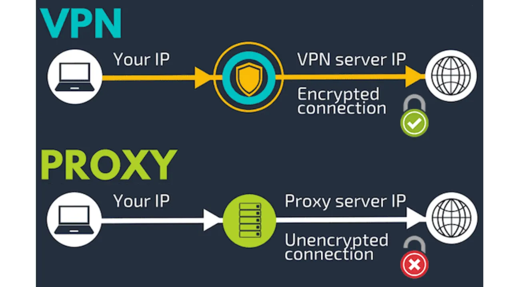

Yazı Hakkında Ön Söz
Preface to the Article
VPN ve Proxy çoğu zaman birbiriyle karıştırılabiliyor. Aralarında benzerlikler olsa da temel işlevleri ve güvenlik seviyeleri açısından belirgin farkları bulunmaktadır.
Bu yazımda ise teknik boğuntulara girmeden bu servislerin ortak noktalarına ve farklılıklarına değineceğim.
VPN Nedir?
What is a VPN?
- İki tarafın arasındaki iletişimin şifrelendirildiği bir servistir. Bu şifrelendirilmiş özel hatta tünel adı verilir.
- VPN trafiği, VPN sunucusuna kadar tamamen şifrelidir ve dışarıdan bakanlar (İSS dahil) tarafından okunabilir değildir.
Proxy Nedir?
What is a Proxy?
- Çevrimiçi bir kaynağa erişmek için aracı görevi gören bir servistir. Temelde sadece internet erişimine aracılık eder.
- İletişimi genellikle şifresizdir.
- Uçtan uca güçlü bir anonimlik (gizlilik) sağlamaz.
- Proxy sunucuları güvenlik taahhüt etse bile proxy sunucusuna giderkenki trafik, internet servis sağlayıcıları (ISP) veya üçüncü kişiler tarafından okunabilir/izlenebilir.

Büyütmek için tıklayın
VPN ve Proxy’nin Ortak Noktaları
Common Points of VPN and Proxy
- Her ikisinde de IP değişikliği sağlanır.
- Sunucu üzerinde log (kayıt) alımı ve monitoring (izleme) yapılabilir.
- Farklı ülkelerdeki serverlara (sunuculara) bağlanarak coğrafi kısıtlamaları (geo-blocking) aşabilirler.